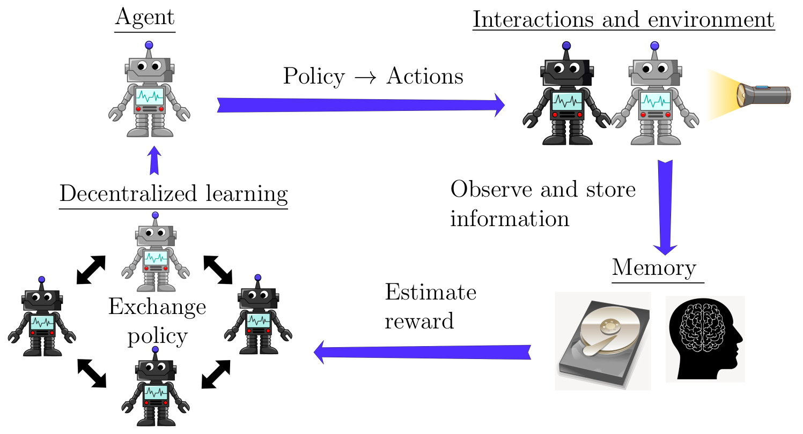
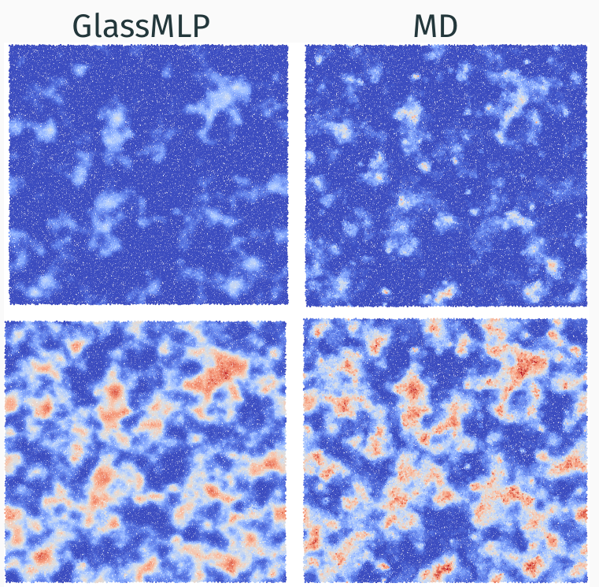
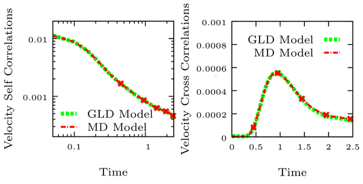
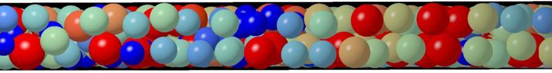
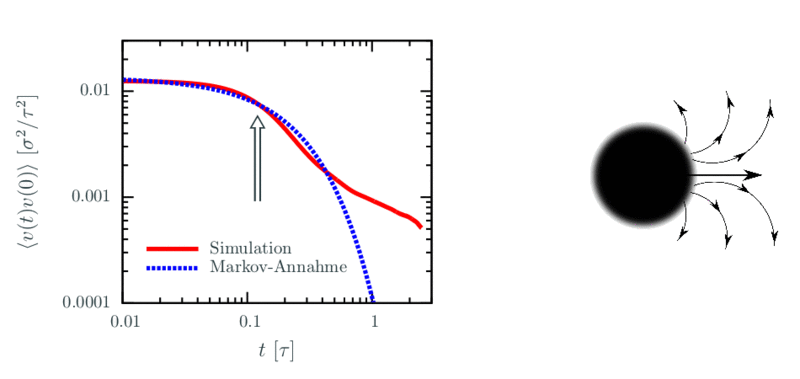
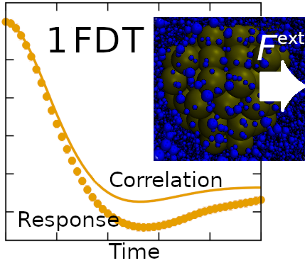

-
Gerhard Jung
PostDoc at Université Grenoble Alpes
Mail: gerhard.jung.physics[GMAIL]
LIPhy, UMR5588
140 Rue de la Physique
38402 Saint-Martin-d'Hères -
I received my Ph.D. in Physics from the University of Mainz (Germany) under the supervision of Prof. Friederike Schmid in 2018. The focus of my research was on dynamic coarse-graining, non-Markovian dynamics and memory effects which are topics I am still actively working on.
After my Ph.D., I joined the group of Prof. Suzanne Fielding at Durham University (U.K.) as a short-term visiting researcher to study soft-glassy materials. Subsequently, I worked for two years as a postdoc in the Bio-Nano Physics group of Prof. Thomas Franosch in Innsbruck (Austria) where my research focused on glass transition in confinement. In 2021, I was awarded a JSPS fellowship for a 6 months postdoc in Kyoto during which I started my collaboration with Prof. Ryoichi Yamamoto in Kyoto (Japan) on active particles in viscoelastic environments.
From October 2021 to Dezember 2023 I was member of the Simon's Collaboration on "Cracking The Glass Problem". Under the supervision of Prof. Ludovic Berthier (CNRS Montpellier, France) and Giulio Biroli (ENS Paris, France) I have used advanced computer simulations and machine-learning techniques to unravel hidden links between the amorphous structure and structural relaxation in supercooled liquids and glasses.
I currently hold a postdoctoral position at the "Laboratoire Interdisciplinaire de Physique" (LIPhy). Collaborating with Misaki Ozawa and Eric Bertin, we employ statistical physics methodologies to gain deeper insights into decentralized learning within ecosystems and robotics.
Research Interests
-
Kinetic Theory of Smart Matter

-
Machine Learning Glasses

- Dynamic Coarse-Graining 
- Confinement

Source: Snapshot with Dynamo - Non-Markovian Dynamics

- Non-Equilibrium Dynamics
 - Other Topics
- Fluctuation-Dissipation Theorems
- Hydrodynamics
- Rheology
Recent Publications
- Kinetic theory of decentralized learning for smart active matter
G. Jung, M. Ozawa, E. Bertin, Phys. Rev. Lett. 134, 248302 (2025), Editors' Suggestion
https://link.aps.org/doi/10.1103/5m44-kwhv - Roadmap on machine learning glassy dynamics
G. Jung, R. M. Alkemade, V. Bapst, D. Coslovich, L. Filion, F. P. Landes, A. Liu, F. S. Pezzicoli, H. Shiba, G. Volpe, F. Zamponi, L. Berthier, G. Biroli, Nature Review Physics (2025)
https://rdcu.be/d5qPx - Normalizing flows as an enhanced sampling method for atomistic supercooled liquids
G. Jung, G. Biroli, L. Berthier, Mach. Learn.: Sci. Technol. 5 035053 (2024)
https://iopscience.iop.org/article/10.1088/2632-2153/ad6ca0 - How boundary interactions dominate emergent driving of inertial passive probes in active matter
J. Shea, G. Jung, F. Schmid, J. Phys. A: Math. Theor. 57, 235006 (2024), Open Access
https://iopscience.iop.org/article/10.1088/1751-8121/ad4ad7 - Dynamic heterogeneity at the experimental glass transition predicted by transferable machine learning
G. Jung, G. Biroli, L. Berthier, Phys. Rev. B 109, 064205 (2024), Editors' Suggestion
https://journals.aps.org/prb/abstract/10.1103/PhysRevB.109.064205
Isn't it a noble and enlightened way of spending our brief time in the sun to work at understanding the universe and how we have come to wake up in it?
Richard Dawkins (also in "The Greatest Show on Earth", Nightwish)